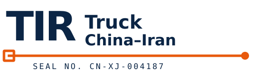

两家或更多供应商，各自在义乌、深圳、广州或上海备货，目的海关相同。任何一家单独都装不满一辆车。
货量达到拼货起收线（1 CBM 或 100 kg）就能和别人同车。合计接近单车天花板时，一辆车就够；超出去的部分要第二辆车。

WhatsAppTIR TRUCK · CHINA → IRAN
两三家供应商在不同城市，同一个目的海关。每票货到集货仓单独收货、单独清点，装完后整车加封一次。
国内集货仓到乌恰另计约 7 天。
两家或更多供应商，各自在义乌、深圳、广州或上海备货，目的海关相同。任何一家单独都装不满一辆车。
货量达到拼货起收线（1 CBM 或 100 kg）就能和别人同车。合计接近单车天花板时，一辆车就够；超出去的部分要第二辆车。
每家供应商把货发到同一个集货仓。每票单独收货登记：件数、尺寸、重量；每件货贴标，写明供应商、票号、目的海关。
这一步不是走形式，是「三家三托货」和「一堆没主的东西」的区别。没有标签和点数，到了目的海关场站没人分得清哪件是谁的。
装完车在起运仓加封。封条只有一条，不是一家一条；所以每一次开箱，开的都是整车。
路上开箱和换车的次数更少，不是没有：直达车在布哈拉换装一次，换装车在奥什和布哈拉换装。车上是一家货还是三家货，这个结构不变。
车是 13.6 米篷车，每车同时受两个上限约束：96 CBM 和 22 吨。哪个先满哪个就是卡点——轻泡货先撞立方，重货先撞吨位。
上限按所有供应商的合计货量算，不是一票一票各算各的。合计超了就要第二辆车，超出部分单独计价。
每家发货日期不同，装车日通常以最后一票到仓为准。如果其中一部分需要先走，逐票单独看。
时效从乌恰口岸起算：目前直达车到马什哈德 18–21 天、到德黑兰 21–23 天；换装车到马什哈德 24–28 天、到德黑兰 26–30 天。国内集货仓到乌恰约 7 天，单独表述，不与上面的区间相加。霍尔果斯方向时效逐票确认。
运费按 CPT / DAP 到目的海关场站；不含目的清关、查验、加固、吊装和保险。伊朗进口清关由买方及其报关行办理。页面不报死价，正式报价走邮件或 WhatsApp，带有效期。
通常两到三家；合计货量不能超过 96 立方和 22 吨。
不是。一条封条管整车。
装车日通常往后推；要不要先把已到齐的票单独发走，逐票确认。
1 立方或 100 公斤起。
马什哈德海关，或德黑兰西关（沙赫里亚尔 / 阿普林）；萨拉赫斯是入境口岸，不是可售目的地。